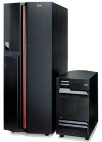
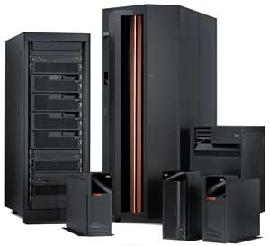
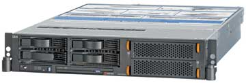
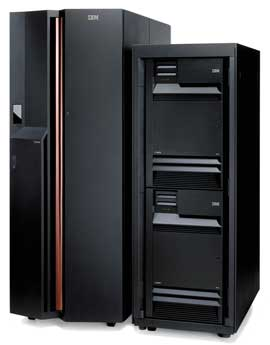

Алексей Борзенко
Идея оригинального компьютера делового назначения была впервые реализована в корпорации IBM (http://www.ibm.com) Фрэнком Солтисом (Frank G. Soltis). Архитектура AS/400 сравнительно быстро нашла многочисленных поклонников среди клиентов корпорации. Эта платформа довольно широко применяется в самых различных отраслях, начиная от розничной торговли и заканчивая медициной. В частности, именно AS/400 лидирует по числу разработанных для нее систем планирования ресурсов предприятия (Enterprise Resource Planning, ERP). Серверы AS/400 составили большое семейство мощных мини-компьютеров с единой архитектурой аппаратных и программных средств.
Вообще говоря, AS/400 была разработана и распространялась как полностью законченная система. Это, в частности, означало, что все функции и возможности, обычно используемые в бизнесе, полностью интегрированы в операционную систему IBM Operating System/400 (OS/400). Поскольку пользователю обычно неинтересны архитектурные особенности компьютера, основными информативными параметрами для него стали номер версии и обновления ОС, например, V4R4.
Обычно считается, что архитектурно платформа AS/400 представляет собой классический мэйнфрейм. Аппаратная часть системы состоит из независимых блоков, которые взаимодействуют между собой посредством одной или нескольких системных шин. Весь ввод-вывод реализуется с помощью периферийных процессоров и не зависит от центрального процессора (полный аналог каналов ввода-вывода на мэйнфреймах). Как известно, системы, построенные в описанной архитектуре, по производительности обычно заметно превосходят компьютеры с общей шиной, в которых практически всеми действиями управляет центральный процессор. Так, в AS/400 пропускная способность внутренних коммуникационных каналов, по сути, не ограничена.
За историю существования AS/400 было выпущено несколько поколений подобных компьютеров. Среди них выделялись отдельные семейства различной производительности, причем разброс значений последней составлял сотни раз внутри всего ряда, а в пределах одного семейства был примерно пятикратным. Это означало, что при одинаковой скорости выполнения заданий число клиентов, которых в состоянии обслуживать компьютер, возрастает в указанное число раз. Перечисленные особенности архитектуры обеспечивали AS/400 гибкость и позволяли адаптировать системы к условиям эксплуатации.
Особенности архитектуры
Вообще говоря, система AS/400 построена на нескольких фундаментальных принципах, в частности, таких, как многоуровневая архитектура, объектная реализация, одноуровневая память и т. д. Первые компьютеры этого семейства появились еще в 1988 г. До появления OS/400 V3R6 в их основе лежали микропроцессоры CISC-архитектуры. В 1995 г. начался перевод всего семейства машин на 64-разрядные микропроцессоры PowerPC Advanced Series. Новые процессоры получили именно такое название, поскольку стандартная архитектура PowerPC была дополнена инструкциями, специфичными для сред с большим числом пользователей и объемами данных.
В начале 2000 г. существенную трансформацию претерпели все семейства серверных систем IBM. Так, платформы для среднего бизнеса AS/400 стали именоваться IBM eServer iSeries. Конечно, это была не просто смена названия: по мнению разработчиков, AS/400 и iSeries отличаются очень существенно. В частности, в iSeries была реализована новая архитектура на базе высокоскоростной шины High Speed Link с пропускной способностью 1 Гбит/с. Шина позволяет работать с усовершенствованными адаптерами сетевых соединений, дисков, лент и, что очень важно, обеспечивает баланс между мощными процессорами и остальной инфраструктурой сервера. Кроме того, iSeries отличает предельная оптимизация для задач ввода-вывода.
Можно сказать, что наступил второй переломный этап в жизни AS/400. Новые технологии, лежащие в основе iSeries, значительно расширяли диапазон применяемых процессоров, типов основной памяти и систем хранения, скорости коммуникаций, повышая масштабируемость системы. Появилась реальная возможность при небольших затратах интегрировать ряд современных вычислительных сред - от стандартного делового ПО до приложений электронного бизнеса на одном сервере.
Весной 2002 г. IBM анонсировала новый сервер IBM eServer i890, который не только унаследовал ряд технологий от мэйнфреймов, но и был построен на микропроцессорах POWER4. 32-процессорная система i890, работающая под управлением OS/400 версии 5 (выпуск 2), практически удвоила вычислительную мощность предыдущего флагмана линейки IBM eServer - i840. В первую очередь модель отличалась расширенными возможностями объединения серверов - здесь поддерживалось до 32 динамических логических разделов OS/400 или Linux. В новом сервере были установлены микропроцессорные модули POWER4 с тактовой частотой 1,3 ГГц, причем каждый такой модуль содержал 174 млн транзисторов. Именно тогда микропроцессор POWER4 получил награду MicroDesign Resources Award в номинации "Лучший серверный процессор".
|  | Сервер eServer iSeries 890 на процессорах POWER4.
|
Стоит особо отметить, что серверы iSeries и AS/400 были разработаны как самодостаточные системы, включающие абсолютно все требуемое для ведения бизнеса оборудование и компоненты системного ПО. В качестве универсальной сетевой системы для бизнеса машины этого семейства оптимизированы для работы в бизнес-среде и имеют ряд уникальных особенностей. Системы iSeries и AS/400 работают с десятками тысяч приложений, среди которых тысячи клиент-серверных (это прикладное ПО написано многочисленными бизнес-партнерами компании IBM). Кроме того, системы iSeries и AS/400 - прекрасные платформы для Microsoft Windows NT и прикладных программ Lotus Domino. Серверы iSeries и системы AS/400 поддерживают более 50 языков. Глобальная поддержка пользователей обеспечивается при помощи обширной сети партнеров.
Поскольку серверы iSeries и AS/400 разработаны для выполнения бизнес-приложений, следует учесть, что одна из фундаментальных характеристик этой среды - высокая интенсивность операций ввода-вывода, а не собственно вычислительных операций. Микропроцессоры, которые обслуживают специфическое устройство ввода-вывода, размещены на платах ввода-вывода, располагающихся в гнездах на системных шинах. Одна из таких плат может быть интегрированным сервером хSeries (сервер Intel-архитектуры) для систем iSeries. Фактически это ПК на вставной плате, который позволяет серверу Windows NT работать на системе iSeries. Подобные платы появились еще на первых AS/400 и тогда назывались IPCS. Периферийное оборудование AS/400 (жесткие диски, CD-ROM, накопитель на лентах, сетевой адаптер и т. п.) могло использоваться с Integrated Netfinity Server.
Единая конфигурация большой системы на основе iSeries может содержать более 200 процессоров. Комплекс основного процессора системы (составленного из отдельных процессоров, числом до 24) может получать запрос на считывание или запись данных в любое устройство ввода-вывода. Этот запрос делегируется специализированному микропроцессору, обслуживающему данное устройство ввода-вывода. Тем временем главный системный процессор продолжает выполнять другую прикладную программу.
Например, в модели iSeries 820 высокоскоростной коммутатор, реализующий обмен данными между памятью, процессором и устройствами ввода-вывода, работает со скоростью в 43,2 Гбайт/с. У каждой группы из шести процессоров и у каждого из четырех банков памяти имеются отдельные связи с коммутатором; кроме того, еще две связи обслуживают трафик устройств ввода-вывода. Наличие независимых путей передачи данных дает значительный выигрыш в быстродействии системы в сравнении с предыдущими конструкциями с единой общедоступной шиной памяти, за доступ к которой боролись все компоненты системы. Новый дизайн обеспечивает множество путей доступа к высокоскоростному коммутатору, который может работать самостоятельно. Его широкая полоса пропускания позволяет быстро и эффективно устанавливать соединение между источником и местом назначения данных, что вносит существенный вклад в повышение общей эффективности использования процессора и улучшает совокупное быстродействие системы.
На пути интеграции
Стратегический план развития серверов IBM состоял в объединении двух семейств - pSeries, в котором используется AIX (версия Unix от IBM), и iSeries с операционной системой OS/400 и ее наследницей i5/OS. Оба семейства уже много лет постепенно сближаются, но с выпуском систем на базе микропроцессора POWER5 их аппаратная часть стала полностью идентичной. Благодаря технологии, называемой сегментацией, или партиционированием (partitioning), одна и та же система может исполнять AIX, i5/OS и Linux. Первые системы с процессорами POWER5 и i5/OS корпорация выпустила в мае прошлого года, подчеркнув усиление унификации в своей группе серверов отказом от марки iSeries в пользу eServer i5. Для AIX-систем стало использоваться аналогичное имя - eServer p5.
|  | Семейство серверов IBM eServer i5.
|
Таким образом, именно благодаря процессорам POWER5 - самым высокопроизводительным 64-разрядным микропроцессорам из всех когда-либо выпускавшихся IBM, серверы IBM eServer i5 стали способны интегрировать и исполнять одновременно различные ОС, включая i5/OS, Linux, AIX 5L и Microsoft Windows. В частности, серверы eServer i5 способны исполнять ОС AIX 5L параллельно с i5/OS для консолидации и поддержки Unix-решений. Реализованная в системах eServer i5 новая технология IBM Virtualization Engine распространяет и дополняет такие возможности виртуализации систем iSeries, как поддержка логических разделов (LPAR).
По информации корпорации, в системах IBM eServer i5 улучшилось соотношение цена/производительность по сравнению с системами IBM eServer iSeries. В частности, системы eServer i5 модель 520 (от одного до двух процессоров POWER5) и eServer i5 модель 570 (от одного до 16 процессоров POWER5 с функцией Capacity on Demand) показывают улучшение этого соотношения на величину до 40% по сравнению с моделями iSeries предыдущего поколения. При этом цена памяти, дисков и серверных компонентов сравнялась с ценами соответствующих блоков Unix-систем. Выпуск новых систем IBM eServer i5 стал частью программы (с общим бюджетом 500 млн долл.), цель которой - вывод на более высокий уровень возможностей вычислительных систем малых и средних компаний.
Серверы eServer i5 поставляются с предустановленной и протестированной интегрированной ОС i5/OS, в состав которой входит базовое ПО для различных бизнес-задач, включая основанную на отраслевых стандартах СУБД IBM DB2 UDB. В состав i5/OS входит также IBM WebSphere Express - масштабируемый механизм обработки транзакций для динамических приложений электронного бизнеса.
Как уже отмечалось, основой систем eServer i5 стали микропроцессоры IBM нового поколения POWER5. Помимо встроенных средств ускорения телекоммуникационных функций и поддержки многопроцессорных конфигураций на одном кристалле в процессорах POWER5 реализована технология параллельной многопоточной обработки (SMT), благодаря которой одно процессорное ядро с точки зрения ОС и прикладного ПО выглядит как два логических процессора. Поскольку микропроцессор POWER5 содержит два процессорных ядра, технология SMT позволяет ему исполнять одновременно четыре потока команд, сокращая общее время выполнения задач.
Микропроцессор POWER5Кристалл POWER5 состоит из 276 млн транзисторов, занимает площадь 389 кв. мм и изготовляется с соблюдением проектных норм 0,13 мкм с применением технологий медных проводников и "кремний-на-изоляторе", позволяющих нарастить производительность и снизить энергопотребление. Одно из главных новшеств в конструкции кристалла по сравнению с POWER4 - это интегрирование в микросхему кэш-памяти 3-го уровня (L3) объемом 36 Мбайт (в предыдущем поколении процессора 32-Мбайт кэш-память L3 располагалась вне кристалла). Благодаря переносу кэш-памяти L3 ближе к процессорному ядру процессору при отсутствии нужных данных в кэш-памяти L2 намного реже придется обращаться за пределы кристалла, за счет чего в SMP-системе уменьшается обмен данными между кристаллами. В результате, если системы на базе POWER4 не могли масштабироваться до числа процессоров, превышающего 32, поскольку это привело бы к резкому увеличению задержек из-за увеличения межпроцессорного трафика, то POWER5 обеспечивает построение 64-процессорных конфигураций. Кроме того, переход на проектные нормы 0,13 мкм позволил конструкторам POWER5 интегрировать в него и контроллер памяти, избавившись от микросхемы, которая в POWER4 отвечала за управление памятью, что обеспечило дополнительное сокращение латентности считывания данных из памяти.
Структура конвейера команд POWER5 осталась полностью идентичной той, что применялась в POWER4, причем не изменились и величины задержек. Такая преемственность должна обеспечить полную совместимость нового процессора с приложениями, разработанными для его предшественника. Четыре кристалла POWER5 (восемь процессорных ядер) вместе с четырьмя кристаллами L3 упаковываются в многокристальный модуль Multichip Module (MCM) размером 95x95 мм, который состоит из керамической подложки и 89 слоев металла и имеет 4491-контактный вывод. Для объединения MCM используется смешанная инфраструктура из шин и распределенного коммутатора - каждый модуль имеет четыре логические шины, позволяющие построить кольцо из четырех MCM. Соединяющая MCM восьмибайтная шина (Inter Book) по-прежнему работает на половине тактовой частоты процессора и обеспечивает пропускную способность 4 Гбайт/с. Для соединения шин применяется усовершенствованная версия распределенного коммутатора, разработанного для POWER4. Число шин увеличилось, что повысило суммарную пропускную способность.
|
Комплекс технологий и услуг IBM Virtualization Engine позволяет клиентам упростить и оптимизировать свою ИТ-инфраструктуру и значительно улучшить экономические параметры и эксплуатацию недостаточно загруженных ИТ-ресурсов. Технология Virtualization Engine расширяет возможности серверов IBM eServer i5, обеспечивая им одновременную работу нескольких ОС. Так, благодаря поддержке AIX 5L компании могут теперь интегрировать на системе IBM eServer i5 Unix-решения наряду с приложениями для i5/OS. Еще больше упрощает ИТ-среду впервые реализованная в IBM eServer i5 поддержка сред Linux на интегрированных серверах IBM eServer xSeries с процессорами Intel. Совместное управление всеми Linux- и Windows-серверами, а также интегрированные средства хранения, безопасности и резервного копирования позволяют клиентам снизить затраты на серверную инфраструктуру.
IBM eServer i5 520 Express Edition - это решение семейства Express, которое поставляется малым и средним компаниям через бизнес-партнеров IBM. В свою очередь, системы IBM eServer i5 570 предоставляют предприятиям среднего размера хорошие возможности управления производительностью по запросу. Дело в том, что они поддерживают функции Reserve Capacity on Demand, On/Off Capacity on Demand и Memory Capacity on Demand. Новая функция Reserve Capacity on Demand позволяет клиенту приобрести "запасной набор" вычислительных мощностей, из которого система автоматически будет черпать ресурсы, когда они понадобятся серверу. Напомним, что функции производительности по запросу Capacity on Demand позволяют клиентам включать и отключать процессоры POWER5 и память в соответствии с изменениями потребностей бизнеса, оплачивая только активные ресурсы.
В июне прошлого года IBM объявила, что ее сервер IBM eServer i5 520 с двумя процессорами POWER5 показал рекордный результат в важном двухуровневом тесте SAP Sales and Distribution (SD) Standard Application Benchmark. Этот компьютер продемонстрировал в тесте лучшую производительность, чем сервер Sun Microsystems с двумя процессорами AMD Opteron 2,21 ГГц и вдвое большим объемом основной памяти. Сервер eServer i5 также превзошел по производительности сервер HP с двумя процессорами Intel Xeon 3,2 ГГц и объемом памяти 8 Гбайт. Результат был получен для системы IBM eServer i5 520 с процессорами POWER5 с частотой 1,65 ГГц. По мнению экспертов, этот успех стал свидетельством возможностей как ОС, так и процессора сервера, а не одной лишь чистой процессорной производительности.
В августе прошлого года IBM представила еще одну модель на базе процессора POWER5 - eServer i5 550. Этот недорогой и мощный сервер предназначен для компаний любого масштаба и, по выражению разработчиков, позволяет точно соотнести ИТ-затраты с потребностями бизнеса. Стоит отметить, что сервер IBM eServer i5 модель 550 может поставляться в комплектации Solution Edition. Это привлекательное по цене предложение доступно при приобретении продуктов некоторых ведущих компаний - независимых поставщиков ПО. Кроме того, данная модель поддерживает новые функции для управления несколькими операционными системами и их оптимизации, реализованные с помощью системных сервисов технологии Virtualization Engine.
В частности, IBM eServer i5 550 позволяет быстро и с наименьшими усилиями упростить ИТ-среду, обеспечивая интеграцию приложений, выполняемых под управлением различных ОС. Сервер i5 550 будет удобен для компаний, которым необходимо одновременно использовать приложения, работающие под управлением нескольких ОС.
Сервер IBM eServer i5 550, поддерживающий от одного до четырех процессоров POWER5, обладает рядом особенностей, которые подробнее обсуждаются ниже.
Новые возможности системного управления
В числе новых системных сервисов решения Virtualization Engine появились такие, как IBM Director MultiPlatform (основанный на открытых стандартах инструмент централизованного управления ИТ-ресурсами для мониторинга нескольких ОС) и IBM Enterprise Workload Manager (инструмент для выявления проблем и оптимизации прикладной рабочей нагрузки с помощью набора самоуправляемых функций). Решение Virtualization Engine представляет собой комплекс системных технологий и сервисов, который позволяет клиенту упростить и оптимизировать ИТ-инфраструктуру и существенно повысить экономическую и техническую эффективность использования ИТ-ресурсов компании.
Архитектура "по требованию"
Клиент может приобрести (активировать) только необходимые ему процессорные ресурсы. Неактивированные процессоры можно задействовать позже по мере необходимости (целиком или частично). Дополнительно предоставляется возможность выбора необходимого числа лицензий на ОС i5/OS, AIX 5L и Linux. Это обеспечивает клиенту более широкий выбор приложений за счет поддержки расширенного набора ОС, а также возможность выбора ОС в соответствии с потребностями применяемых приложений, а не с характеристиками сервера.
Solution Edition
Специальное ценовое предложение, действующее при приобретении продукции определенных независимых поставщиков ПО. В частности, предложение Solution Edition действует при приобретении программных продуктов компаний Clear Technologies, IBS, Integrated Distribution Solutions, LLC, Intentia, Lawson Software, Manhattan Associates, MAPICS, PeopleSoft и SSA Global.
Domino Edition
Предложение распространяется на клиентов, которые собираются использовать серверы Domino, мигрируют с Microsoft Exchange Server на Domino или консолидируют свои серверы Domino. Предложение Domino Edition имеет конкурентоспособную цену и поддерживает функцию Capacity on Demand. В комплект поставки входят два активных процессора и лицензии на i5/OS.
По мнению руководства корпорации, представленное сочетание наиболее мощных аппаратных технологий, а также программных решений от ведущих независимых поставщиков и архитектуры "по требованию" стало наилучшим возможным решением для клиентов. Это поможет им сконцентрироваться на бизнес-целях компании вместо того, чтобы ограничивать свой бизнес возможностями ИТ-среды.
Кроме того, IBM объявила две дополнительные опции по интеграции и управлению Linux-серверами на базе процессоров Intel в сервере eServer i5. В настоящее время Linux, в дополнение к Windows, поддерживается на интегрированных серверах IBM eServer xSeries (IXS) и интегрированных адаптерах xSeries (IXA). Теперь, с выпуском нового интегрированного адаптера xSeries (IXA), эта опция распространяется на недорогие серверы eServer xSeries - в том числе на сервер x346 для установки в стойку с высокой плотностью монтажа. Это расширяет для клиентов возможности выбора и подтверждает ведущую позицию серверов eServer i5 по ассортименту поддерживаемых приложений и ОС.
Оптимально для Linux
Осенью 2004 г. IBM представила сервер на базе процессоров POWER5, оптимизированный для использования с ОС Linux, - IBM eServer OpenPower 720. Он представляет собой альтернативное Linux-решение более дорогим Unix- и Linux-системам начального уровня от основных конкурентов корпорации в данном сегменте рынка - HP и Sun Microsystems, которое может обеспечить повышение эффективности бизнеса и сокращение расходов заказчиков. Считается, что с выпуском нового сервера IBM перенесла в сектор серверов начального уровня свой десятилетний опыт в области 64-разрядных архитектур и функции обеспечения надежности, пришедшие из мира мэйнфреймов.
По заявлениям разработчиков, в IBM OpenPower корпорация воплотила надежность, готовность и удобство обслуживания корпоративного класса, до того свойственные преимущественно продуктам высшего уровня. В будущем заказчики этих серверов смогут снизить свои эксплуатационные расходы за счет функции виртуализации для систем OpenPower - элемента технологии IBM Virtualization Engine, позволяющей сократить число используемых систем и снизить стоимость их внедрения.
Системы IBM OpenPower легко интегрируются в существующую вычислительную инфраструктуру, обеспечивая высокомасштабируемую 64-разрядную платформу на процессоре POWER5 для ОС Linux (дистрибутивы Red Hat или Novell SUSE Linux).
Всего за четыре месяца с момента появления систем OpenPower независимые поставщики ПО и разработчики для Linux оптимизировали для платформы OpenPower свыше 250 приложений. Таким образом, общее число сертифицированных приложений к началу 2005 г. превысило 900. Эти приложения стоят в одном ряду с тысячами приложений с открытым исходным кодом для множества отраслей, включая финансовые услуги, розничную торговлю, государственное управление и медико-биологические науки.
|  | Платформа OpenPower 710.
|
На базе новой платформы OpenPower 710 может работать сочетание 64-разрядной системы SAP для Linux с СУБД IBM DB2 и maxDB - доступное, высокопроизводительное и надежное SAP-решение корпоративного класса для малых и средних компаний. Решение IBM OpenPower Consolidation Express позволяет малым и средним компаниям упростить свою ИТ-инфраструктуру и одновременно повысить гибкость бизнеса. Благодаря мощным и гибким возможностям виртуализации и поддержки микроразделов на одной системе OpenPower 710 можно эффективно консолидировать рабочие нагрузки Web-сервера, файлового сервера, сервера печати, сервера каталогов, брандмауэра и сервера электронной почты, которые традиционно разносятся на отдельные системы. Компании могут заменить дорогие в эксплуатации устаревающие серверы новой консолидированной инфраструктурой, основанной на более простой, открытой и гибкой архитектуре. Такая масштабная поддержка позволит малым и средним предприятиям легко создавать, развертывать и поддерживать ключевые бизнес- и технические приложения на платформе Linux on Power.
Только тестыСовременный уровень развития ОС Linux позволяет поддерживать важнейшие приложения, и семейство OpenPower выводит эту ОС на новые высоты с помощью серверов, оптимизированных для Linux и функционирующих на процессорах POWER5. В частности, клиенты могут воспользоваться обширным опытом сотрудничества IBM с поставщиками обоих дистрибутивов Linux - Novell SUSE и Red Hat, - которые поддерживаются на сервере OpenPower. Как было объявлено, серверы OpenPower превзошли аналогичные системы HP и Sun Microsystems в важнейших отраслевых тестах производительности. SPECompM2001. Превзойдя максимальный объявленный результат HP на 52%, четырехпроцессорный сервер OpenPower 720 продемонстрировал один из самых высоких показателей для Linux-систем в отрасли. SPECjbb2000. Четырехпроцессорный сервер OpenPower 720 превзошел максимальный объявленный результат для серверов HP (на 16%) и Sun Microsystems и продемонстрировал один из самых высоких показателей среди всех четырехпроцессорных Linux-систем по числу операций в секунду. SPECsfs97_R1.v3 SMP. Четырехпроцессорный сервер OpenPower 720 продемонстрировал общее время отклика 0,79 мс (один из лучших показателей в отрасли среди Linux-систем) и в процессе тестирования превзошел наилучший объявленный результат HP на 65%.
|
Как заявила компания Novell, она предоставляет готовые к корпоративному применению программные средства и сервисы для ОС Linux, обеспечивающие клиентам инновационные решения для развития бизнеса. В свою очередь, серверы IBM OpenPower, оптимизированные для Linux и предлагаемые по стандартной для отрасли цене, - это как раз та основа, которая все больше интересует заказчиков по мере возрастания объема Linux-приложений в их компаниях. ОС Novell SUSE Linux Enterprise Server 9, основанная на ядре Linux 2.6, поддерживает архитектуру POWER5 и технологию IBM Virtualization Engine, обеспечивая надежную, гибкую и проверенную 64-разрядную основу, которая существенно улучшает возможности работы в Linux-среде.
Руководство компании Red Hat также высоко оценило инициативу IBM Linux on POWER и сервер IBM eServer OpenPower, которые обеспечивают пользователям Red Hat Enterprise Linux более широкий выбор при создании архитектур с открытым кодом. По их мнению, корпорации и правительственные организации стремятся использовать преимущества Linux - безопасность и низкие расходы. Сервер OpenPower с ОС Red Hat Enterprise Linux позволяет реализовать эти преимущества на недорогой, гибкой и надежной аппаратной платформе.
Первой моделью семейства IBM eServer OpenPower, которая поступила в продажу, стала система IBM eServer OpenPower 720 на базе процессоров POWER5 с тактовыми частотами 1,5 или 1,65 ГГц. Эти четырехпроцессорные системы начали поставляться в корпусе для монтажа в стойку или в вертикальном, при максимальном объеме памяти 64 Гбайт. Сервер OpenPower 720 поддерживает ОС Novell SUSE Linux Enterprise Server 9 и Red Hat Enterprise Linux AS 3 Update 3. В первой половине текущего года IBM планирует представить двухпроцессорную систему IBM eServer OpenPower.
Серверы для бизнес-решений
Под занавес 2004 г. IBM установила новый стандарт в области высокопроизводительных вычислительных систем, представив новые серверы уровня предприятия на основе процессоров POWER5. Модели IBM eServer i5 595 обладают высокой производительностью и расширяемостью и мощными возможностями виртуализации. Они стали флагманскими изделиями линейки компьютеров IBM POWER5 и самым современным воплощением технологии IBM Virtualization Engine. Поддерживая сотни приложений, системы eServer i5 позволяют строить высококлассные бизнес-решения и достигать высоких экономических показателей благодаря самому широкому выбору операционных систем, интегрированному связующему ПО, СУБД и средствам безопасности IBM в сочетании с исключительной масштабируемостью и гибкостью.
|  | Флагман - сервер eServer i5 595.
|
По мнению большинства экспертов, сервер eServer i5 595 был разработан IBM на основе самых высокопроизводительных аппаратных средств. Первые подобные системы, выпущенные в мае 2004 г., были призваны помочь компаниям упростить ИТ-системы и ограничить рост расходов на ИТ, одновременно предоставив современные средства интеграции и технологии, позволяющие быстро адаптироваться к меняющимся потребностям бизнеса. Система eServer i5 представляет собой законченный сервер для построения решений благодаря интегрированной, ориентированной на практические задачи конструкции, поддерживающей широкий спектр приложений на одном сервере (как известно, eServer i5 поддерживает десятки тысяч приложений для ОС AIX 5L, i5/OS, Windows и Linux).
Чтобы учесть проблемы, с которыми сталкиваются компании в попытках оптимизировать свою ИТ-инфраструктуру за счет консолидации серверов, корпорация IBM разработала тест iSeries Virtualization Grand Slam, наглядно демонстрирующий преимущества системы eServer i5. В частности, этот тест производительности подтверждает способность сервера eServer i5 эффективно обслуживать множество приложений и ОС в условиях повседневных перегрузок без ущерба для производительности, удобства эксплуатации или экономических показателей и одновременно демонстрирует преимущества технологий IBM Virtualization Engine. Результаты теста показывают, каким образом, выполняя множество приложений на одном сервере семейства eServer i5, компании смогут лучше использовать потенциал своих ИТ-инфраструктур и повысить эффективность инвестиций в ИТ.
Модель IBM eServer i5 595 стала самым высокопроизводительным сервером, завершившим линейку систем POWER5 eServer i5. Так, она более чем вчетверо превосходит по производительности своего предшественника - 32-процессорный сервер eServer iSeries 890. Сервер IBM eServer i5 595 достиг наивысшего в отрасли результата среди 32-процессорных SMP-систем в тесте производительности SPECjbb2000. Напомним, что тест SPECjbb2000 измеряет производительность сервера, исполняющего типичные бизнес-приложения на основе Java, имитируя процесс обработки заказов оптовым поставщиком. Данный тест представляет собой трехуровневую клиент-серверную систему, в которой основное внимание уделяется связующему уровню. Будучи высокоинтегрированным сервером, eServer i5 595 предоставляет широкие возможности для расширения и гибкость в поддержке вычислительных сред бизнеса по требованию с использованием ОС IBM i5/OS, IBM AIX 5L, Linux и Microsoft Windows (при использовании интегрированных адаптеров xSeries или интегрированных серверов xSeries).
Серверам iSeries принадлежит и еще один рекорд, установленный в аудите NotesBench для приложения R6Mail на системе eServer i5 570. Этот сервер, выпущенный чуть ранее в 2004 г., стал самым большим на тот момент сервером eServer iSeries с процессорами POWER5. При тестировании с новой модельной нагрузкой R6iNotes система iSeries показала рекордный результат - время отклика 39 мс для одного сервера IBM eServer i5 570, обслуживающего одновременно 165 тыс. пользователей. Таким образом, этот сервер превзошел прежний рекорд сервера HP и занял первое место в данном тесте.
Первые пользователи серверов IBM eServer i5 595 буквально полны оптимизма. В частности, эксперты из аналитической компании Shell Canada ожидают, что в ближайшие два года нагрузки на серверы iSeries в корпоративном вычислительном центре Shell Canada будут удваиваться ежегодно. Однако благодаря сочетанию 64-разрядной масштабируемости и экономически эффективных технологий виртуализации новый сервер IBM eServer i5 595 гарантирует развертывание дополнительных мощностей в соответствии с задачами развития бизнеса.
Что касается eServer i5 570, клиенты уже оценили преимущества и этой системы. Так, канадская компания - производитель джемов, начинок и соусов E.D. Smith & Sons, использующая среду i5/OS для поддержки работы своих 400 сотрудников, перешла на эту платформу. Компании был необходим сервер, который обеспечил бы возможности роста и способность эффективно обслуживать операции во всем мире на одной машине. Как и другие компании, использующие системы eServer i5, E.D. Smith & Sons уже убедилась, что система eServer i5 570 значительно превосходит по эффективности и быстродействию ранее использовавшееся решение.
Мощные iSeries нашли свое место и в игорном бизнесе. Так, компания Boyd Gaming много лет использовала систему IBM eServer iSeries для поддержания защищенной и надежной ИТ-инфраструктуры своего казино в Лас-Вегасе. В начале 2004 г. эта компания, принимая во внимание быстрое развитие своего бизнеса, обратилась к своему давнему бизнес-партнеру Agilysys Hospitality Solutions Group за помощью в упрощении своей ИТ-инфраструктуры. Предложенное решение было основано на сервере eServer i5 570 и двух серверах eServer i5 520, обслуживающих девять казино и одиннадцать отелей. Сотрудники Boyd Gaming убедились в простоте управления, надежности и экономичности серверов eServer i5, которые позволили консолидировать на трех машинах обслуживание 20 предприятий.
Технологии и сервисы IBM Virtualization EngineБлагодаря высокоинтегрированным продуктам серверы iSeries могут помочь добиться максимальной отдачи от инвестиций в ИТ-инфраструктуру за счет прозрачного управления гетерогенными разделами или серверами. Впервые примененные в серверах этого семейства платформенные технологии IBM Virtualization Engine упрощают ИТ-инфраструктуру без нарушения ее функционирования, давая возможность сосредоточиться на развитии и расширении бизнеса. Функция подключения-отключения вычислительных мощностей по требованию IBM eServer On/Off Capacity on Demand. IBM предоставляет быстрый, не нарушающий работу системы способ активации дополнительных процессорных мощностей серверов iSeries. Эти возможности дополнены функциями предоставления резервной мощности по требованию Reserve Capacity on Demand, пробного подключения вычислительной мощности по требованию Trial Capacity on Demand и подключения оперативной памяти по требованию Memory on Demand. Технология динамических логических разделов (LPAR). Она предоставляет удобную инфраструктуру для консолидации систем на базе серверов iSeries. Воспользовавшись возможностями технологии LPAR, заказчики могут оптимизировать свои инвестиции в ИТ за счет быстрой консолидации множества специализированных серверов на меньшем количестве серверов iSeries. Новые возможности серверов iSeries (например, логические разделы без ограничения размера) позволяют автоматически задействовать ресурсы серверов для нескольких приложений в зависимости от приоритетов бизнеса. Параллельная многопоточность (SMT). За счет выполнения множества потоков на одном и том же процессоре технология SMT позволяет параллельно выполнять несколько потоков команд, что способствует оптимизации использования процессора. Процессоры POWER5, которыми оснащены серверы iSeries, автоматически реализуют технологию SMT, не требуя модификации или настройки приложений. Поддержка виртуальных локальных сетей Ethernet. Поддержка в серверах iSeries сетей Virtual Ethernet обеспечивает высокоскоростные соединения между логическими разделами и серверами под управлением Microsoft Windows. Не требуя дополнительных аппаратных средств, системы iSeries на базе процессоров POWER5 поддерживают каналы связи Virtual Ethernet со скоростью передачи 1 Гбит/с между различными ОС, такими, как i5/OS, Linux и AIX 5L. Сегменты Virtual Ethernet можно создавать и удалять динамически. Доступ к виртуальному сегменту локальной сети можно ограничить в соответствии с требованиями к безопасности или для разделения трафика. Виртуальный ввод-вывод. Технология Virtual I/O позволяет распределять между логическими разделами такие физические ресурсы, как накопители, адаптеры и устройства. Несколько разделов могут совместно использовать физические ресурсы ввода-вывода сервера, при этом каждый раздел может одновременно использовать как виртуальные, так и физические устройства ввода-вывода. Кроме того, виртуальный ввод-вывод позволяет администраторам создавать новые разделы, не добавляя в систему физические адаптеры ввода-вывода. Вместе со средствами POWER Hypervisor платформенные сервисы IBM Virtualization Engine дополняют технологии IBM Virtualization Engine, способствуя упрощению ИТ-инфраструктуры. IBM Director Multiplatform. Даже самая полнофункциональная мощная система требует для эффективной работы удобных инструментальных средств управления. Программное средство IBM Director Multiplatform предоставляет общую консоль на базе Web-интерфейса для системного мониторинга рабочей среды по требованию, облегчая управление гетерогенными системами и ресурсами. IBM Grid Toolbox V3 for Multiplatforms. Связывая системы и ресурсы через единый управляющий интерфейс, программное средство IBM Grid Toolbox V3 for Multiplatforms помогает создавать более безопасные и надежные корпоративные инфраструктуры на базе открытых стандартов. Развертывание систем. Предназначенные для максимального использования ресурсов и упрощения инфраструктуры центров обработки данных, функции подготовки систем к работе серверов iSeries позволяют компаниям развертывать и переназначать ИТ-ресурсы в соответствии с меняющимися потребностями бизнеса. IBM Enterprise Workload Manager (EWLM). Программное средство EWLM ведет мониторинг вычислительных ресурсов, времени реакции и потока транзакций, помогая улучшить управление уровнями сервиса и планирование вычислительных ресурсов. В свою очередь, возможности самоуправления помогают выявлять проблемы и оптимизировать управление рабочей нагрузкой в гетерогенных многоуровневых средах. |